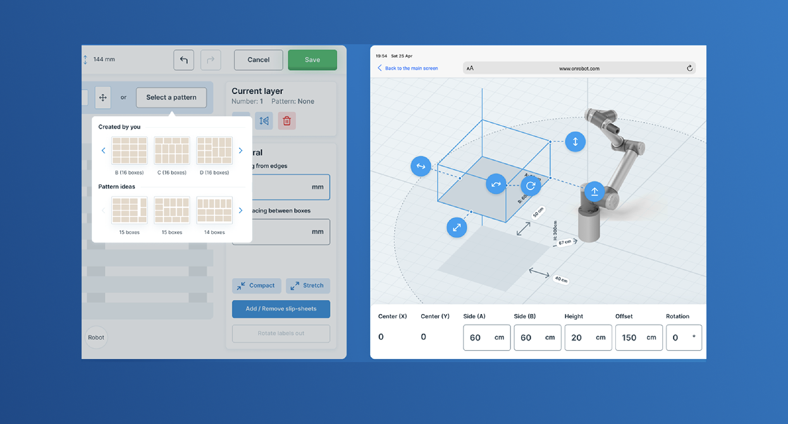

- Role
- Lead product designer
- Focus
- No-code robotics HMI
- Period
- 12 weeks
- Delivery
- Research through pilot measurement
Measurement note: Setup, error, training, SUS and CSAT figures are rounded portfolio-reported pilot results from 12 tasks with 18 operators; support and adoption figures cover the first six weeks and three pilot sites. They are not independently audited.
My role & scope
I led the 12-week product-design work across field research, interaction design, prototyping, HMI patterns, implementation QA and pilot measurement, partnering with robotics, engineering and safety specialists.
Challenges
The core challenge was turning robot geometry into a workflow operators could use without scripting or spreadsheet calculations. I designed a no-code 3D workspace with guided steps that preserved the precision robots require—down to millimeters and degrees—while remaining usable on an iPad with gloves.
The Process
- Weeks 1–3: Field research & task analysis (shop-floor observations, operator interviews).
- Weeks 4–7: Rapid wireframes → interactive prototypes of the 3D workspace and parameter panels; weekly usability loops.
- Weeks 8–10: High-fidelity UI, design tokens, HMI pattern library.
- Weeks 11–12: Dev handoff, implementation QA, pilot instrumentation (analytics + in-app survey).
The Outcome
- −42% time-to-first-setup (avg. 68→39 mins across 12 tasks, n=18 operators)
- −63% parameter-entry errors (unit/axis mistakes per session)
- −31% support tickets in the first 6 weeks post-launch
- Training time −75% (2h coached → 30m guided onboarding)
- SUS 86 / CSAT 4.6/5 in pilot usability rounds
- Adoption: 3 pilot sites, ~45 daily operators, 400+ sessions, 99.7% crash-free
Behind the Decisions: Reflections & Trade-offs
OnRobot was about making robot setup, a task that normally requires an engineer, feel natural to operators who need to get the job done safely.
The core trade-off was precision vs. approachability. Robotics teams needed millimeter-level control; operators needed to see “move this here” and trust that nothing dangerous would happen. We decided to bring the complexity into a visual 3D workspace + parameter panels, instead of stuffing it into forms and manuals. That made setups feel like manipulating a scene, not programming a machine.
Nothing about this could have been solved from a conference room. The most important design work happened on the shop floor: watching how people actually rigged tasks, where they guessed, where they double-checked with a colleague. Weekly reviews with robotics, HMI devs, and safety took that raw reality and hardened it into a system that supported faster setup, fewer errors, and internal safety review.
